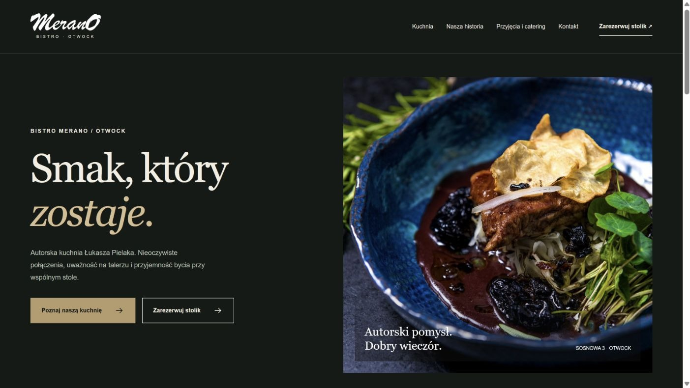
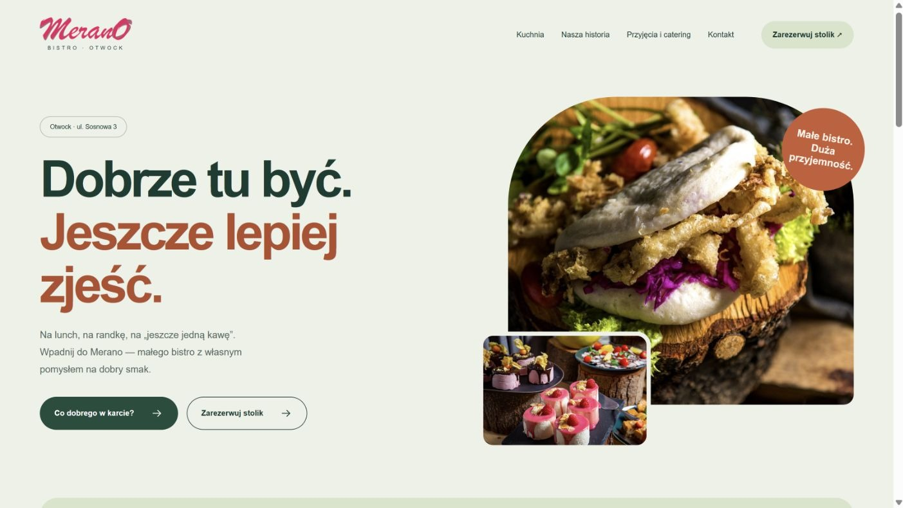
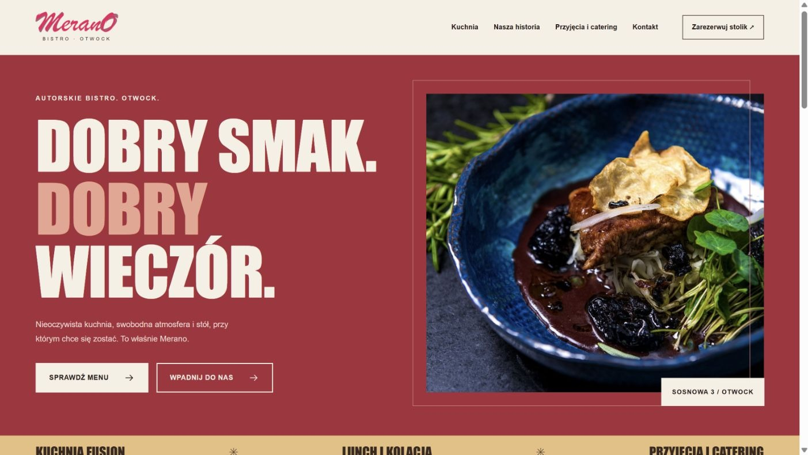
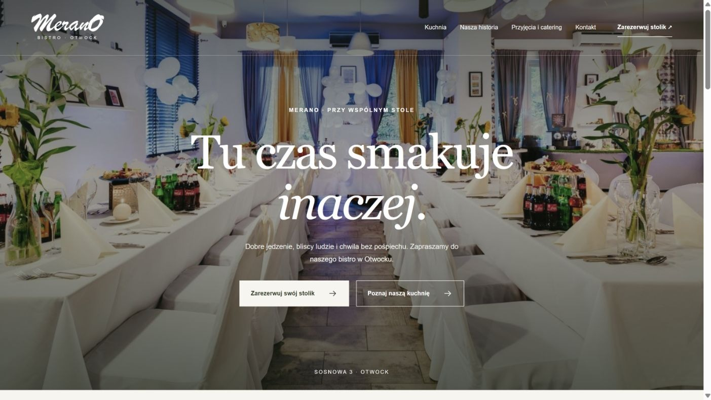

01Atelier
Ciemny · elegancki · autorski
Duża typografia szeryfowa, ciemna zieleń i spokojny rytm. Na pierwszym planie autorska kuchnia i jej twórca.
Otwórz pełną stronę
02Zielone bistro
Jasny · swobodny · przyjazny
Miękkie kształty, duże litery i kolaż zdjęć. Zaproszenie do codziennych wizyt: na lunch, kawę i kolację.
Otwórz pełną stronę
03Dobry wieczór
Wyrazisty · miejski · plakatowy
Burgund, mocne nagłówki i układ inspirowany plakatem. Merano jako miejsce na smak i spotkanie.
Otwórz pełną stronę
04Przy stole
Fotograficzny · ciepły · spokojny
Pełnoekranowe zdjęcie wnętrza i spokojna opowieść. Najpierw atmosfera miejsca, potem kuchnia i gospodarz.
Otwórz pełną stronę